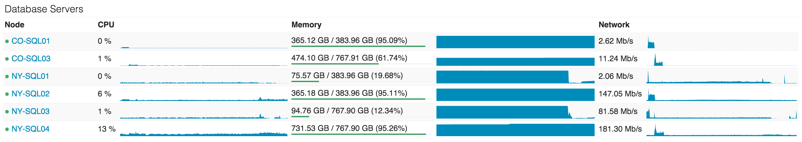

Stack Overflow: The Architecture - 2016 Edition
https://nickcraver.com/blog/2016/02/17/stack-overflow-the-architecture-2016-edition/
作者在 2013 年写过一篇 文章 来介绍当时他们的SO技术架构栈和硬件配置，然后在2016年进行了更新。2016年这篇除了架构分析之外，还写了硬件配置，部署服务，服务监控，缓存处理等等一系列 文章. 内容比较多，因为对SO也不是特别了解，对于他们使用的Windows和.NET也不熟悉，所以只是看了前面两篇。硬件配置最大的影响就是核不多但是内存都特别大。
从请求数量上看，各项指标都增长了大约20%-50%. ASP.Net上面节省的运行时间来自于硬件升级，
You may be wondering about the drastic ASP.Net reduction in processing time compared to 2013 (which was 757 hours) despite 61 million more requests a day. That’s due to both a hardware upgrade in early 2015 as well as a lot of performance tuning inside the applications themselves. Please don’t forget: performance is still a feature . If you’re curious about more hardware specifics than I’m about to provide—fear not. The next post will be an appendix with detailed hardware specs for all of the servers that run the sites (I’ll update this with a link when it’s live).
- 209,420,973 (+61,336,090) HTTP requests to our load balancer
- 66,294,789 (+30,199,477) of those were page loads
- 1,240,266,346,053 (+406,273,363,426) bytes (1.24 TB) of HTTP traffic sent
- 569,449,470,023 (+282,874,825,991) bytes (569 GB) total received
- 3,084,303,599,266 (+1,958,311,041,954) bytes (3.08 TB) total sent
- 504,816,843 (+170,244,740) SQL Queries (from HTTP requests alone)
- 5,831,683,114 (+5,418,818,063) Redis hits
- 17,158,874 (not tracked in 2013) Elastic searches
- 3,661,134 (+57,716) Tag Engine requests
- 607,073,066 (+48,848,481) ms (168 hours) spent running SQL queries
- 10,396,073 (-88,950,843) ms (2.8 hours) spent on Redis hits
- 147,018,571 (+14,634,512) ms (40.8 hours) spent on Tag Engine requests
- 1,609,944,301 (-1,118,232,744) ms (447 hours) spent processing in ASP.Net
- 22.71 (-5.29) ms average (19.12 ms in ASP.Net) for 49,180,275 question page renders
- 11.80 (-53.2) ms average (8.81 ms in ASP.Net) for 6,370,076 home page renders
3年来在硬件上都做了升级，但是数量没有变化，继续延续他们scale-up而不是scale-out的策略.
So what’s changed in the last 2 years? Besides replacing some servers and network gear, not much. Here’s a top-level list of hardware that runs the sites today (noting what’s different since 2013):
- 4 Microsoft SQL Servers (new hardware for 2 of them)
- 11 IIS Web Servers (new hardware)
- 2 Redis Servers (new hardware)
- 3 Tag Engine servers (new hardware for 2 of the 3)
- 3 Elasticsearch servers (same)
- 4 HAProxy Load Balancers (added 2 to support CloudFlare)
- 2 Networks (each a Nexus 5596 Core + 2232TM Fabric Extenders, upgraded to 10Gbps everywhere)
- 2 Fortinet 800C Firewalls (replaced Cisco 5525-X ASAs)
- 2 Cisco ASR-1001 Routers (replaced Cisco 3945 Routers)
- 2 Cisco ASR-1001-x Routers (new!)
他们用Redis做cache, pub/sub, 以及推荐模型的参数，并且运行得相当地稳定。
We use Redis for a few things here and it’s rock solid. Despite doing about 160 billion ops a month, every instance is below 2% CPU. Usually much lower.
Alongside the 2 main Redis servers (master/slave) that run all the site instances, we also have a machine learning instance slaved across 2 more dedicated servers (due to memory). This is used for recommending questions on the home page, better matching to jobs, etc. It’s a platform called Providence, covered by Kevin Montrose here.
The main Redis servers have 256GB of RAM (about 90GB in use) and the Providence servers have 384GB of RAM (about 125GB in use).
Redis isn’t just for cache though, it also has a publish & subscriber mechanism where one server can publish a message and all other subscribers receive it—including downstream clients on Redis slaves. We use this mechanism to clear L1 caches on other servers when one web server does a removal for consistency, but there’s another great use: websockets.
SQL Server运行的都是超大内存(384GB / 768GB), 内存估计都被用于buffer了所以几乎是满的，从CPU上看其实load不高。
The first cluster is a set of Dell R720xd servers, each with 384GB of RAM, 4TB of PCIe SSD space, and 2x 12 cores. It hosts the Stack Overflow, Sites (bad name, I’ll explain later), PRIZM, and Mobile databases.
The second cluster is a set of Dell R730xd servers, each with 768GB of RAM, 6TB of PCIe SSD space, and 2x 8 cores. This cluster runs everything else. That list includes Talent, Open ID, Chat, our Exception log, and every other Q&A site (e.g. Super User, Server Fault, etc.).
CPU utilization on the database tier is something we like to keep very low, but it’s actually a little high at the moment due to some plan cache issues we’re addressing. As of right now, NY-SQL02 and 04 are masters, 01 and 03 are replicas we just restarted today during some SSD upgrades. Here’s what the past 24 hours looks like:

这篇文章 Stack Overflow: The Hardware - 2016 Edition 全面介绍了他们使用的硬件，其实除去了上面提供online service的机器之外，还有不少离线任务的机器。我稍微总结了一下有: VMServers(VMWare,开发机器用来隔离出多个环境), Machine Learning Server, Logstash, HTTP Logging SQL Server, Development SQL Server. 粗略地看了下，每个机器的配置都比较高，远远超过了我的认知（或许我的认知适用于scale-out那种架构）。如果不少用户依然使用scale-up的策略的话，那么软件上就需要为单机上多核和大内存/大数据优化。
以Machine Learning这个机器为例，分别是16/24 cores（看上去也不是很高），384GB内存的确很大，没有显卡配置估计也没有使用深度学习啥的。
Machine Learning Servers (Providence) These servers are idle about 99% of the time, but do heavy lifting for a nightly processing job: refreshing Providence. They also serve as an inside-the-datacenter place to test new algorithms on large datasets.
- 2 Dell R620 Servers, each with:
- Dual E5-2697 v2 Processors (12 cores @2.7–3.5GHz each)
- 384 GB of RAM (24x 16 GB DIMMs)
- 4x Intel 530 480GB SATA SSDs (RAID 10)
- Dual 10 Gbps network (Intel X540/I350 NDC)
Machine Learning Redis Servers (Still Providence) This is the redis data store for Providence. The usual setup is one master, one slave, and one instance used for testing the latest version of our ML algorithms. While not used to serve the Q&A sites, this data is used when serving job matches on Careers as well as the sidebar job listings.
- 3 Dell R720xd Servers, each with:
- Dual E5-2650 v2 Processors (8 cores @2.6–3.4GHz each)
- 384 GB of RAM (24x 16 GB DIMMs)
- 4x Samsung 840 Pro 480 GB SATA SSDs (RAID 10)
- Dual 10 Gbps network (Intel X540/I350 NDC